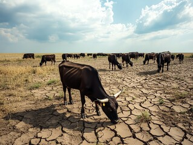

Overview of Desertification Causes
Desertification is a complex process driven by a combination of natural factors and human activities. It primarily affects arid, semi-arid, and dry sub-humid regions, where fragile ecosystems are most vulnerable to degradation.
1. Unsustainable Agricultural Practices
Overgrazing, improper irrigation techniques, and the over-cultivation of land exhaust the soil's nutrients and structure, leading to desertification.
- Overgrazing: Excessive grazing by livestock reduces vegetation cover, exposing soil to erosion.
- Poor Irrigation Practices: The mismanagement of water resources, such as the excessive use of irrigation, causes salinization, reducing soil fertility.
2. Deforestation
Deforestation leads to the removal of trees and vegetation that protect the soil. Without their roots to stabilize the land, soil becomes more prone to erosion and nutrient loss.

3. Climate Change
Rising temperatures and changing precipitation patterns exacerbate drought conditions in already dry regions, further stressing fragile ecosystems.

- Drought: Reduced rainfall and prolonged dry spells lead to a lack of water, making the land more susceptible to desertification.
- Increased Temperature: Higher temperatures increase evaporation rates, drying out the soil and vegetation.
4. Water Mismanagement
Unsustainable water usage, such as over-extraction of groundwater and damming of rivers, disrupts natural water cycles, contributing to land degradation.

5. Urbanization and Infrastructure Development
The expansion of cities, roads, and other infrastructure projects disrupts natural landscapes, leading to soil compaction, loss of vegetation, and increased land degradation.

6. Population Pressure
Rapid population growth in certain regions increases demand for food, water, and resources, driving unsustainable agricultural practices and land use.

Conclusion
Desertification is a multi-faceted environmental challenge, driven by human activities such as deforestation and unsustainable agriculture, as well as natural factors like climate change. To effectively combat desertification, an integrated approach that addresses both environmental and socio-economic factors is necessary.